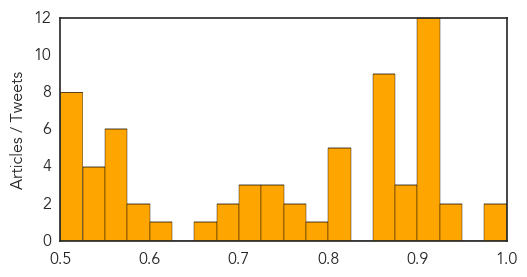

Unknown
30-Day Web Trend
4 alerts, 3 warnings

30-Day Twitter Trend
0 alerts, 0 warnings

Article Locations

Article Confidences
Top Articles:
- 0.998
- What’s going on in Iran’s Kerman Province? - National
- 0.994
- As Toll Crosses 550 India Gears Up For War Against Encephalitis
- 0.948
- High number of undetected TB cases hampering control
- 0.937
- Enterovirus suspicion in encephalitis zone
- 0.917
- Chicago Tribune
- 0.917
- Chicago Tribune
- 0.917
- Chicago Tribune
- 0.917
- Chicago Tribune
- 0.917
- Chicago Tribune
- 0.917
- Chicago Tribune
- 0.917
- Chicago Tribune
- 0.917
- Chicago Tribune
- 0.917
- Chicago Tribune
- 0.917
- Chicago Tribune
- 0.904
- 34,000 cases of HFMD reported in Thailand so far
- 0.903
- NHS patients at risk of getting mad cow disease during surgery
- 0.899
- Meghalaya Health dept keeping watch on Encephalitis
- 0.881
- African Swine Fever hits domestic herds in Poland
- 0.877
- Diarrhoea-vomiting-dehydration deaths spur health dept into overdrive
- 0.866
- Ex-Bizjet CEO pleads guilty to foreign bribery
- 0.866
- Polish airline LOT resumes flights to Israel
- 0.866
- Russian court sentences opposition leaders to 4.5 years each in jail
- 0.866
- UN says first aid convoy enters Syria without government consent
- 0.866
- At least 50 French citizens on missing Air Algerie flight -airline
- 0.866
- Likely many French on missing Air Algerie flight
- 0.866
- Two Finnish aid workers killed in Afghanistan
- 0.866
- Sudanese Christian convert woman arrives in Italy
- 0.866
- China's PLA Navy ship Peace Ark sails off southeast of Oahu, Hawaii during the multi-national military exercise RIMPAC
- 0.818
- Encephalitis virus claims over 100 lives in Bengal
- 0.807
- Lithuania to slaughter 20,000 pigs as swine fever spreads
- 0.806
- Rabies Detected In Kitsilano Bat, Vancouver Health Officials Warn
- 0.805
- Lithuania to slaughter 20,000 pigs as swine fever spreads
- 0.804
- Lithuania to slaughter 20,000 pigs as swine fever spreads
- 0.778
- Veterinary Service halts pork imports from Lithuania :: The Baltic Course
- 0.769
- First foot-and-mouth case since 2011 confirmed
- 0.767
- Colonial Beach, Va. residents told E.coli found in water weeks ago
- 0.743
- More than 100 people succumb to the deadly disease in West Bengal and Assam
- 0.734
- Government Measures to Fight Encephalitis in North Bengal Inadequate, Delayed
- 0.731
- Saving Cameroonians from Ill Health
- 0.712
- Some 2,000 people undergo obesity surgery annually
- 0.710
- Foot-and-mouth disease returns to Gyeongsang-INSIDE Korea JoongAng Daily
- 0.702
- S.Korea confirms hog foot-and-mouth outbreak
- 0.699
- Encephalitis toll 106, intensity coming down
- 0.691
- Lithuania orders pig cull amid first cases of African swine fever
- 0.655
- South Korea Confirms Foot-and-Mouth Case at Hog Farm
- 0.612
- SPRINT delivers life-saving services to conflict affected people in the Central African Republic - Central African Republic
- 0.597
- Malaria is the leading killer in Central African Republic
- 0.594
- Department of Health - Enumclaw Courier-Herald
- 0.570
- Africa's growth path: Reduce diseases, Bill Gates cautions
- 0.562
- Plague quarantine lifted from Chinese city
Showing top 50 articles...
Top Tweets:
- 0.675
- Soler eliminada en el WTA de Bakú: La española Silvia Soler cayó eliminada este jueves en el torneo de tenis d... http://t.co/53tC7PobSx
- 0.654
- RT: Pilas no se queden por fuera de la fiesta de en con y la tropa!! http…
Measles
30-Day Web Trend
0 alerts, 0 warnings

30-Day Twitter Trend
0 alerts, 0 warnings

Article Locations

Article Confidences

Top Articles:
- 0.930
- Measles case reported in Tarrant County
- 0.881
- Tarrant County man visited Kansas before measles diagnosis
- 0.881
- South Sudan: Early Warning and Disease Surveillance Bulletin (IDP camps and Communities) Week 28 (7 – 13 July 2014) - South Sudan
- 0.775
- Richland County-area health officials hope measles waning
Top Tweets:
-
No tweets found for Jul 24, 2014